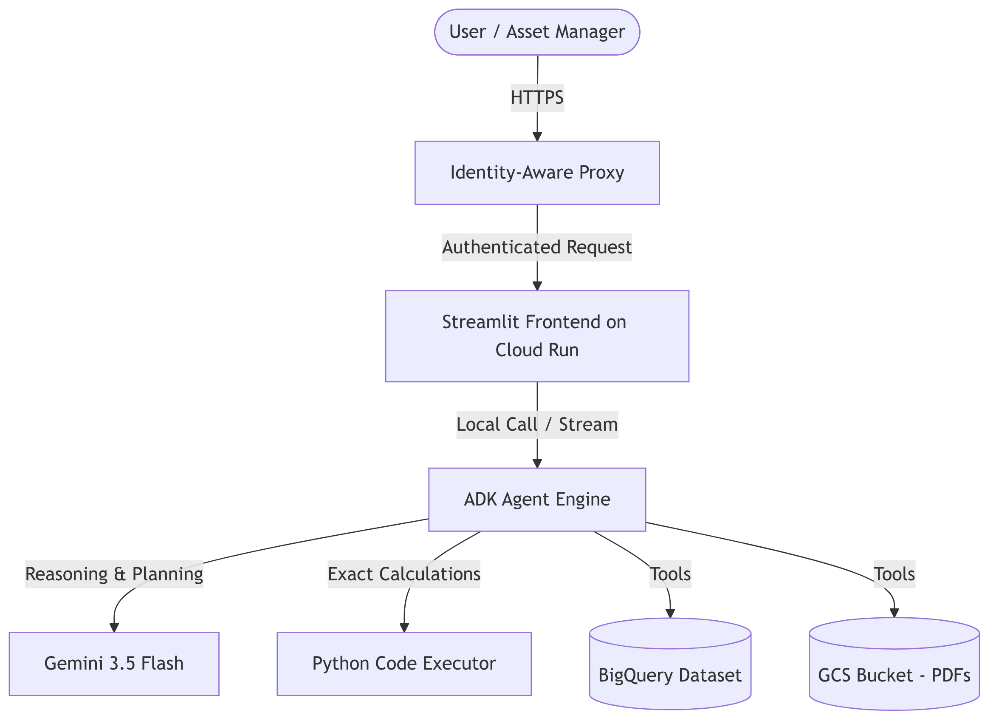
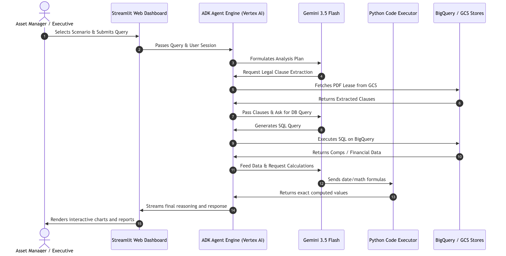
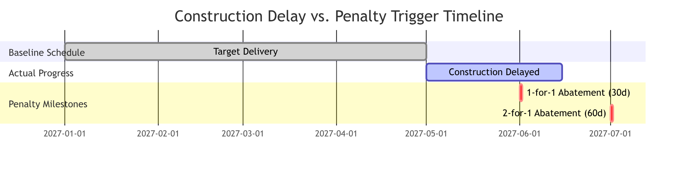
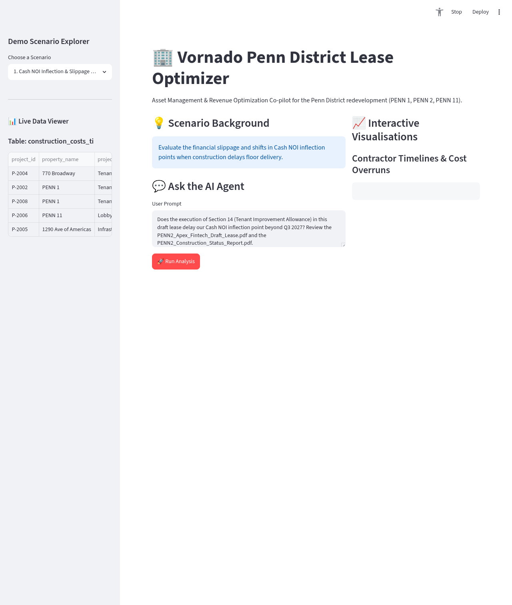
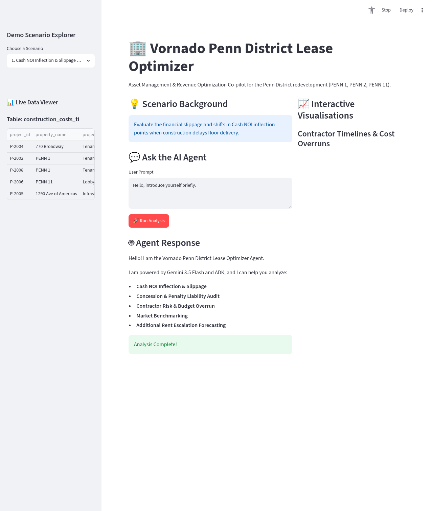

In the commercial real estate industry, asset management has traditionally been split between legal and financial workflows.
On one hand, there are long lease agreements containing complex legal clauses, force majeure provisions, and penalty structures. On the other hand, there are financial databases tracking rents, comps, construction budgets, and tax history. Bridging the gap between these two data sources has historically required manual analysis, legal reviews, and spreadsheet modeling—often leading to delayed decisions, missed revenue opportunities, or unmitigated risks.
Today, we are introducing the AI Real Estate Asset Optimizer Co-pilot, built using Google's Agent Development Kit (ADK) and powered by Gemini 3.5 Flash.
This solution is designed to help real estate investment trust (REIT) and asset management executives integrate legal contracts and financial datasets to optimize how commercial property portfolios are managed.
The AI Asset Optimizer is an agentic RAG (Retrieval-Augmented Generation) pipeline that combines unstructured document intelligence with structured database querying and exact mathematical execution.


Here is how the AI Asset Optimizer handles five critical business storylines to protect and project Net Operating Income (NOI):

The visual workspace brings the agent's multi-modal intelligence directly to portfolio managers, dividing the layout between data exploration, natural language queries, and visual analytics.


To understand the operational flow, we examine the dashboard layout across its two primary execution phases: the initial setup and the post-analysis output.
The baseline interface presents the asset manager with a clean, structured workspace organized into three primary columns:
project_id, property_name, project_type for the active table construction_costs_ti) from the connected BigQuery database.PENN2_Apex_Fintech_Draft_Lease.pdf and PENN2_Construction_Status_Report.pdf and requesting an analysis of Section 14 tenant improvement milestones). A red Run Analysis action button is positioned at the bottom of the section.Upon clicking Run Analysis, the co-pilot executes the query and dynamically updates the workspace:
The AI Asset Optimizer relies on a multi-modal mock data architecture, integrating unstructured contract documents in Google Cloud Storage with structured operational records in BigQuery. This allows the co-pilot to audit draft contracts by cross-referencing them against actual historical and market data.
Unstructured documents are stored in the GCS bucket vornado-leases-genaillentsearch and contain the legal parameters and real-time project updates:
PENN1_BioMed_Diagnostics_Draft_Lease.pdf: A draft lease agreement for BioMed Diagnostics at PENN 1. It details starting base rent schedules, tenant improvement (TI) allowance terms, and commencement milestones.PENN2_Apex_Fintech_Draft_Lease.pdf: A draft lease agreement for Apex Fintech at PENN 2. It contains legal provisions regarding base rent rates, late delivery penalty/abatement schedules (e.g., Section 14 and Section 3.3), and base year opex definitions.PENN2_Construction_Status_Report.pdf: A progress update from the general contractor outlining targeted versus actual delivery dates, project delays, and specific causes of delay (e.g., HVAC units lead times).Structured tables are stored under the BigQuery dataset genaillentsearch.vornado_realestate and provide historical portfolio metrics and local submarket benchmarks:
lease_id (STRING): Unique identifier for the historical lease.property_name (STRING): Vornado property name (e.g. PENN 1, PENN 2).tenant_name (STRING): Name of the tenant.execution_date (DATE): Date the lease agreement was signed.commencement_date (DATE): Date the lease term officially commenced.lease_term_months (INT64): Total length of the lease in months.rsf (INT64): Rentable square feet leased.initial_base_rent_per_rsf (NUMERIC): Starting base rent rate per RSF per year.free_rent_months (INT64): Number of months of base rent abatement.ti_allowance_per_rsf (NUMERIC): Tenant Improvement allowance provided per RSF.step_up_percentage (NUMERIC): Percentage increase during rent step-ups.step_up_interval_months (INT64): Number of months between rent step-ups.industry (STRING): Tenant industry vertical.lease_status (STRING): Current status (Active, Expired, Terminated).project_id (STRING): Unique identifier for the construction project.property_name (STRING): Vornado property name.project_type (STRING): Type of project (e.g. Tenant Fit-Out, Lobby Redevelopment).contractor_name (STRING): Name of the general contractor.start_date (DATE): Project start date.completion_date (DATE): Project actual or projected completion date.budgeted_cost_per_rsf (NUMERIC): Underwritten or budgeted cost per RSF.actual_cost_per_rsf (NUMERIC): Actual cost incurred per RSF.delay_days (INT64): Number of calendar days of delay.reason_for_delay (STRING): Primary driver of construction delay.comp_id (STRING): Unique identifier for the market comparison record.property_name (STRING): Name of the comp property.submarket (STRING): Submarket classification (e.g. Penn District, Midtown West).execution_date (DATE): Date the lease comp was executed.rsf (INT64): Rentable square feet of the comp lease.lease_term_months (INT64): Lease term in months.base_rent_per_rsf (NUMERIC): Base rent per RSF per year.free_rent_months (INT64): Number of months of rent abatement.ti_allowance_per_rsf (NUMERIC): TI allowance per RSF.source (STRING): Brokerage source of the data (JLL, CBRE, Cushman).property_name (STRING): Vornado property name.year (INT64): Calendar year of tax or expense assessment.real_estate_tax_per_rsf (NUMERIC): Real estate tax rate per RSF.operating_expense_per_rsf (NUMERIC): Operating expense rate per RSF.base_year_tax (NUMERIC): Base year real estate tax rate per RSF for escalations.base_year_opex (NUMERIC): Base year operating expense rate per RSF for escalations.To execute a lease audit, the agent performs a coordinated 4-step pipeline:
construction_costs_ti or historical tax rates in tax_escalations).PENN2_Apex_Fintech_Draft_Lease.pdf) to extract rent abatement triggers and penalty rules (e.g., Section 3.3). It then queries the construction status report (PENN2_Construction_Status_Report.pdf) or the construction_costs_ti table to obtain actual contractor delays (e.g., 44 delay days on PENN 2). Using this data, the agent computes the exact cash flow slippage and penalty exposure (e.g., number of 1-for-1 and 2-for-1 rent abatement days) via the Python Code Executor.construction_costs_ti table in BigQuery. It runs aggregation queries to compute historical average delay days and budget overruns for that contractor (e.g., Turner Construction), evaluating project completion risk.market_comps table to pull comparable transactions in the same submarket (e.g., Penn District) and calculates the average base rent and TI allowance to benchmark the competitiveness of the draft.tax_escalations table to calculate base year vs. subsequent year variances, applying caps and ratios to forecast future tenant billings.Instead of waiting days for analysts to manually cross-reference legal drafts and financial spreadsheets, lease negotiators can query the co-pilot in seconds to understand the financial impact of changing clauses.
By auditing delivery delays against contract penalty clauses in real-time, asset managers can proactively negotiate extensions, manage contractor accountability, and manage rent abatement risk.
Instantly benchmark proposed lease terms against real-time submarket comps and historical contractor timelines. Negotiate with comprehensive, data-backed insights.
Understand exactly when straight-line GAAP revenue translates into actual cash in the bank, and project the long-term impact of escalations and caps.
*The AI Real Estate Asset Optimizer integrates legal constraints and financial data to streamline commercial portfolio management.*